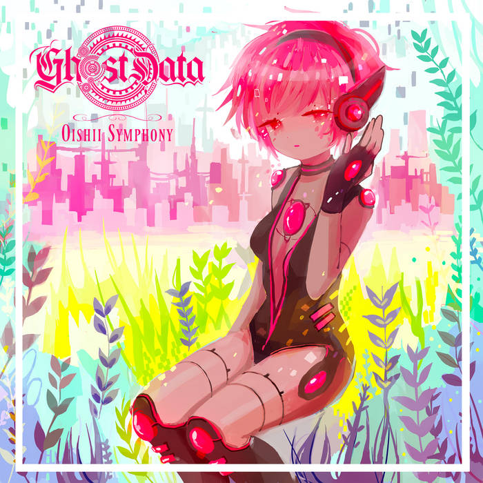
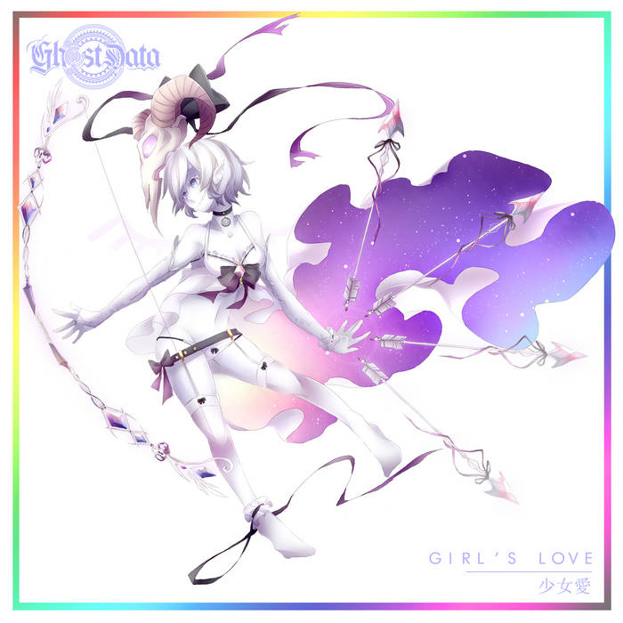
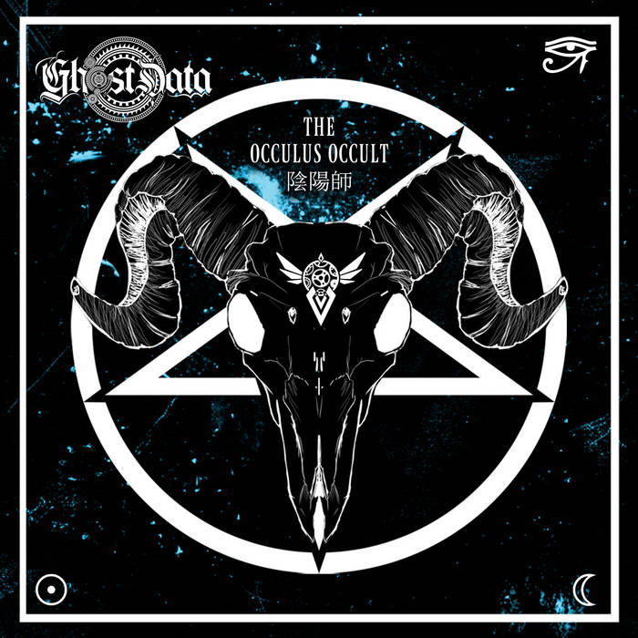
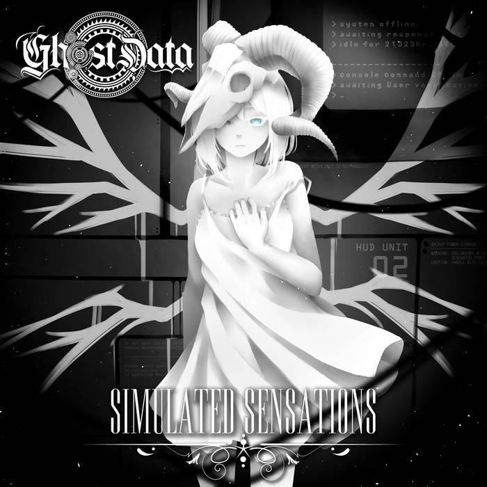
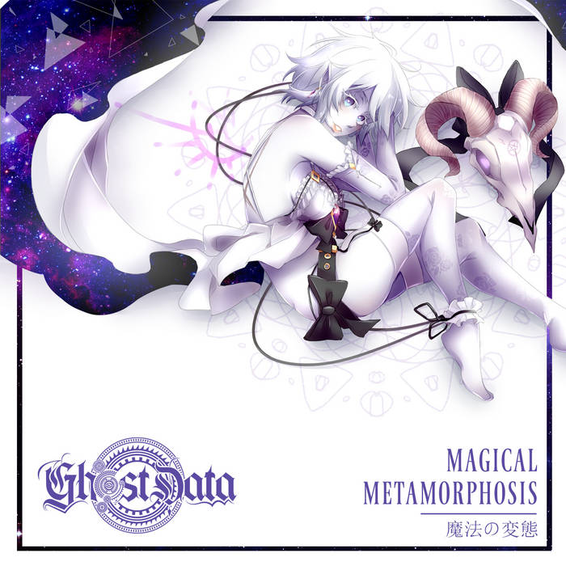
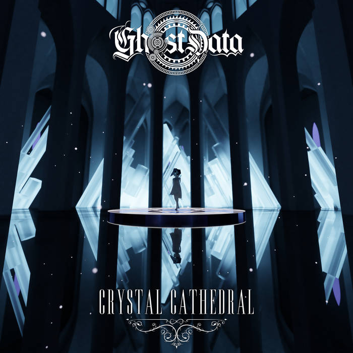
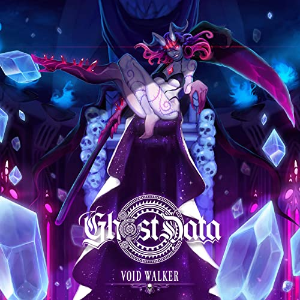
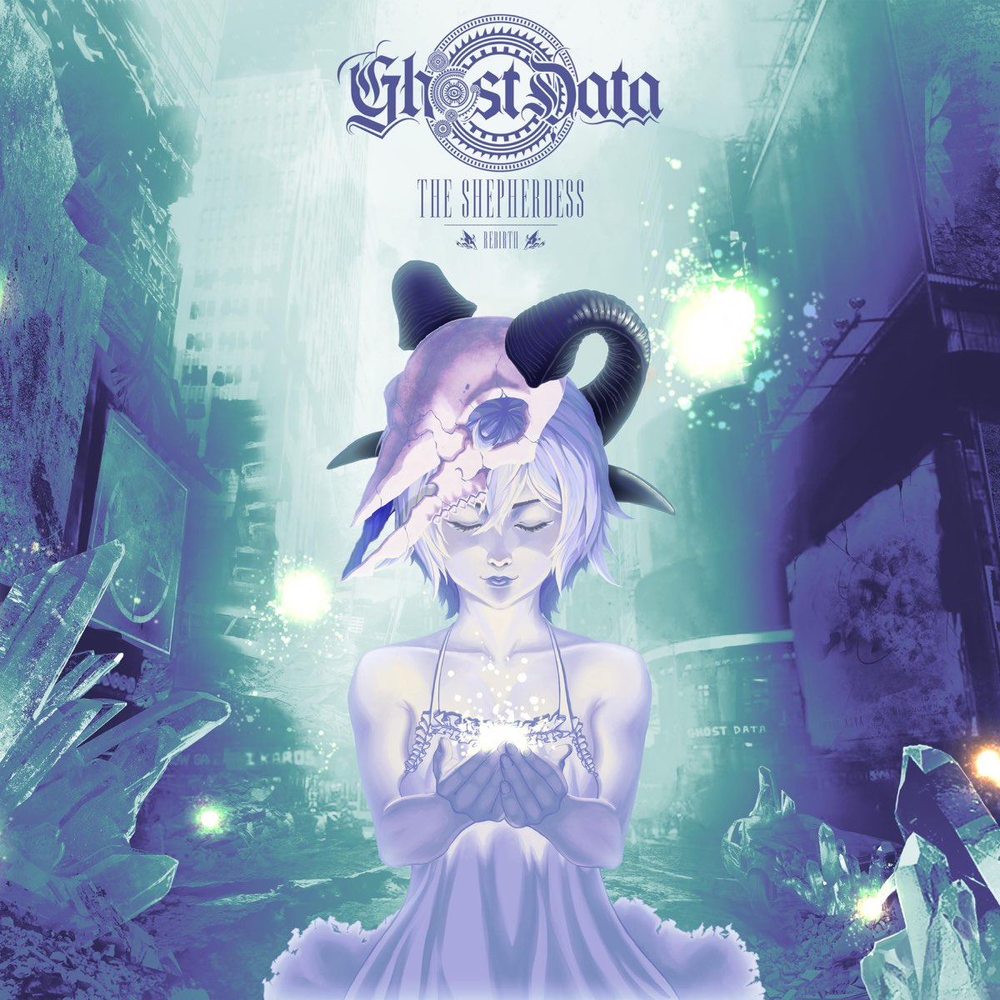
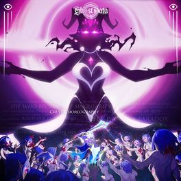
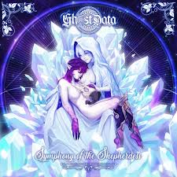

¿Quien es GHOST DATA?
Es un DJ, músico, cantante y productor estadounidense de música electrónica, es de Houston, Texas y actualmente no hay mucha informacion sobre su carrera musical debido a que actualmente no es tan famoso como los anteriores.
Ademas, es el creador, escritor, productor y autor de su historia llamada "The Shepherdess".
Albumes
Hasta la fecha (11/10/2022) GHOST DATA tiene 10 Albumes que varian desde generos como el Dreansynth, Mid Tempo y Electro en general:
| Año | Nombre | Imagen |
|---|---|---|
| 2015 | Oishii Symphony |  |
| 2016 | Girl's Love |  |
| 2016 | The Occulus Occult |  |
| 2017 | Simulated Sensations |  |
| 2017 | Magical Metamotphosis |  |
| 2018 | Crystal Cathedral |  |
| 2019 | Void Walker |  |
| 2019 | The Shepherdess: REBIRTH |  |
| 2020 | Cruel Choreography |  |
| 2022 | Symphony of the Shepherdess |  |
Canciones
GHOST DATA se empezo a conocer a partir 2 canciones que saco juntas llamadas "Blatant Plagiarism" y "Mahou Shoujo":
Ademas puedo agregar algunos remixes que ha hecho, algunos de bandas famosas como Depeche Mode:
Depeche Mode - Personal Jesus (GHOST DATA Remix)
Blanke - The Fall (GHOST DATA Remix)
Y al final mi recomendacion de cancion seria Realm of the Boundless que es la ultima cancion de su album "Symphony of the Shepherdess":